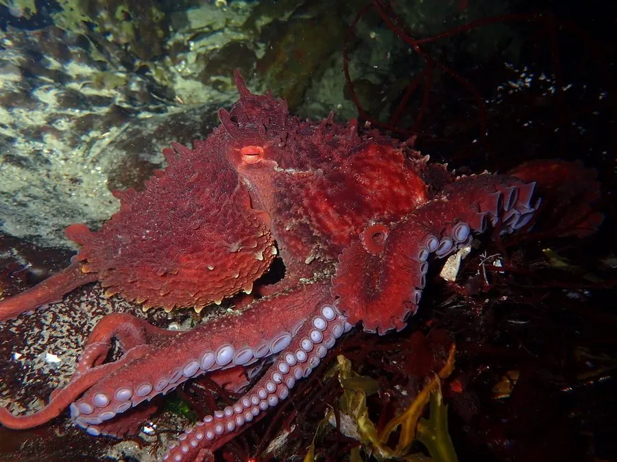

软体动物 · 动物界
太平洋巨型章鱼 Enteroctopus dofleini

体型最大的章鱼，腕展可达 4–6 m、体重可超过 50 kg，生活在北太平洋寒冷海域，聪明好奇，是深海中的顶级捕食者之一。
- 分类
- 门软体动物门纲头足纲目八腕目科蛸科属巨章鱼属
- 栖息环境
- 北太平洋寒冷海域的岩礁和洞穴，水深 0–2000 m，夜行性
- 地理分布
- 北太平洋，从日本、俄罗斯远东到阿拉斯加、加拿大和美国西海岸
- 保护级别
- 暂无评估
物种志
太平洋巨型章鱼是体型最大的章鱼，腕展可达 4–6 m，体重通常 15–30 kg，最大记录可超过 70 kg。外套膜呈卵圆形，体表粗糙，颜色能从红褐变为灰白，皮肤上的乳突还能改变身体纹理，帮助它融入岩石和沙地。
太平洋巨型章鱼分布于北太平洋，从日本、俄罗斯远东到阿拉斯加、加拿大和美国西海岸，栖息于水深 0–2000 m 的岩礁和洞穴，多在潮下带至数百米深处活动。它是夜行性动物，捕食蟹类、双壳类、鱼类和虾。太平洋巨型章鱼以聪明著称，能解决迷宫问题、打开罐子，还会用石头和贝壳筑巢。它的寿命约 3–5 年，繁殖后死亡；雌性可产下数万至数十万枚卵，并长时间守护卵，直到幼体孵化。目前它没有IUCN 的正式评估，中国未将其列入国家重点保护野生动物名录。
形态与习性
- 食性夜行性，捕食蟹类、双壳类、鱼类和虾
- 腕展可达 4–6 m，是体型最大的章鱼
- 体重通常 15–30 kg，最大记录超过 70 kg
- 栖息深度水深 0–2000 m 的岩礁和洞穴
- 繁殖雌性产卵数万至数十万枚，长时间守护至孵化
- 寿命约 3–5 年，繁殖后死亡
趣味知识
- 太平洋巨型章鱼是体型最大的章鱼，腕展可达 6 m。
- 它非常聪明，能打开罐子、解决迷宫问题。
- 雌性产卵后会长达数月不吃不喝地守护卵，直到幼体孵化后死亡。